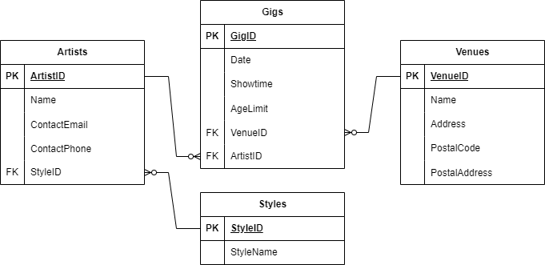

Demo 1, keikat
Toteutetaan kuvan mukainen tietokanta jossa säilytetään keikkojen tietoja.

Tietokannan luonti
- Lisää taulut cPanelin alle tietokantaasi.
- Tee yhteydet tietokantataulujen välille.
- Lisää hieman testidataa jokaiseen tauluun phpMyAdminin avulla.
- Avaa phpMyAdminin työkalu Suunnittelija (Designer) ja ota kuvakaappaus tietokantasi rakenteesta. Tallenna kuva itsellesi.
GitHub
- Tee GitHub-repon sisälle kansio demo1, lisää sinne markdown-tiedosto readme.md. Liitä kuva mukaan GitHub-repoon ja näytä se readme-tiedostossa.
- lisää aliotsikko Kyselyt ja kopioi tänne ratkaisusi demon kyselyihin (SQL).
Kyselyt
- Hae kaikki keikat päivämäärän mukaan järjestettynä (SELECT + ORDER BY).
- Hae kaikki Tampereella sijaitsevat keikkapaikat (WHERE).
- Hae esiintyjät joilla on gmail-osoite (LIKE)
- Hae kaikki esiintyjät, näytä tuloksissa esiintyjän ja tyylin nimi (INNER JOIN).
- Hae kaikki K18-keikat, näytä tuloksissa keikkapaikan nimi ja esiintyjän nimi.
- Hae kaikki tietokantasi esiitynjät joiden tyylin nimi on esimerkiksi "Rock".
- Hae K18-keikkojen lukumäärä (COUNT)
- Hae eri paikkakuntien keikkapaikkojen keikkojen lukumäärät (GROUP BY)
PostalAddress COUNT Tampere 2 Helsinki 1 Oulu 1 - Hae lukumäärät eri tyylien esiityjistä (GROUP BY + INNER JOIN)
StyleName COUNT Pop 1 Rock 1 Metal 5 - Hae kaikki tammikuun keikat.